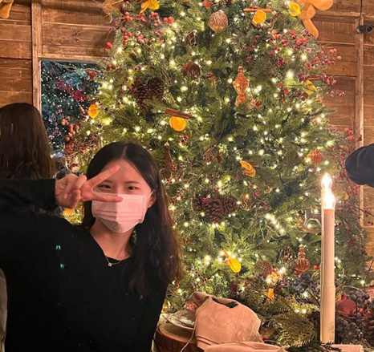
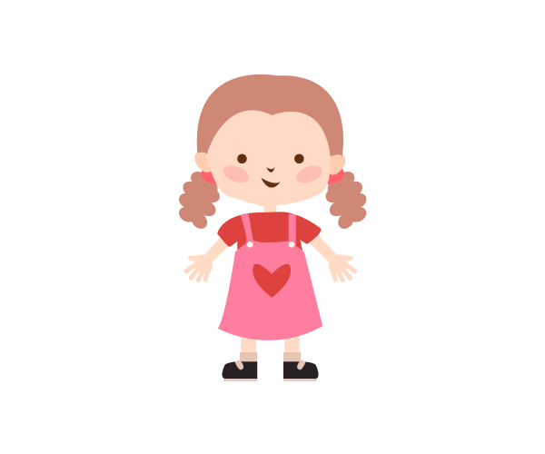

<DOCTYPE html>
    <html>

    <head>
        <style>
            *{
               font-family:'Gill Sans', 'Gill Sans MT', Calibri, 'Trebuchet MS', sans-serif;
            }
            audio{opacity:0.5;}
        </style>
        <meta charset="UTF-8">
        <title>introduction</title>
    </head>

    <body>
        <!--헤더 부분-->
        <header>
            <center>
                <br><br>
                
            </center>
            
        </header>
        <br><br><br><br>
        <!--목차 부분-->
        <nav>
            <audio src="./img/bgm.mp3" controls style="float:right"></audio>
            <br><br><br><br><br>
            
            <div style="text-align : center;">
                <UL style="list-style-type:none;">
                    <li>2003년생</li>
                    <li>양서고등학교 졸업</li>
                    <li>동덕여자 대학교 정보통계학과 재학</li>
                </UL>
            </div>
        </nav>

        <!--본문 부분-->
        <p>
            <br>
            <div style="text-align : center;">
                <p>SNS 바로가기</p>
                <a href="https://blog.naver.com/kyulee1027" target="_blank" title="클릭하세요!">
                    </a>
                <a href="https://www.instagram.com/tange.rine_g/" target="_blank" title="클릭하세요!">
                    </a>
            </div>
            <br>
            <div style="height:70px; background-color: hsl(0, 36%, 89%);">
            </div>
            <h3>My childhood</h3>
            <div><a href="http://gyullee.github.io/gyulLee/hw05/hw05.html" target="_blank" title="클릭하세요!">
                </a></div>
            여자아이 아이콘을 클릭하세요!
            <h3>My favorite</h3>
            <div style="background-color: #e7bfc8;">
                <span>
                    <a href="http://gyullee.github.io/gyulLee/hw04/subway.html" target="if_a">food</a> |
                </span>
                <span>
                    <a href="http://gyullee.github.io/gyulLee/hw01/hw01.html" target="if_b">character</a> |
                </span>
                <span>
                    <a href="http://gyullee.github.io/gyulLee/hw02/intro.html" target="if_c">drama</a>
                </span>
                
            </div>
            <p />
            <iframe src="http://gyullee.github.io/gyulLee/hw04/basic.html" width="500" height="500" name="if_a" frameborder="0" scrolling="no"></iframe>
            <iframe src="http://gyullee.github.io/gyulLee/hw04/basic.html" width="490" height="500" name="if_b" frameborder="0" scrolling="no"></iframe>
            <iframe src="http://gyullee.github.io/gyulLee/hw04/basic.html" width="500" height="500" name="if_c" frameborder="0" ></iframe>
            <div style="background-color:#e7bfc8; opacity:0.8;">The things that represent me the most</div>

            <br><br><br>
            <div><strong>나의 모토: yet to come</strong></div><br>
            내가 좋아하는 아티스트인 방탄소년단의 노래에서 영감을 얻어 나의 모토가 된, yet to come</p>
            내가 걸어온 길보다 더 성대한 것들이 인생에 펼쳐질 것이라는 의미<br>
            <iframe width="500" height="330" src="https://www.youtube.com/watch?v=kXpOEzNZ8hQ" frameborder="1"></iframe><br>
            <a href="https://www.youtube.com/watch?v=kXpOEzNZ8hQ" target="_blank" title="클릭하세요!">
                (연결이 어렵다면 이곳을 클릭)노래 들으러 가기</a>

            <br><br><br>
            <h3>오늘의 날씨 예보</h3>
            <table border="1" bordercolor="pink">
                <tr>
                    <th colspan="2">날짜</th>
                    <th>날씨</th>
                </tr>
                <tr>
                    <td>29일(목)</td>
                    <td>오후</td>
                    <td>맑음</td>
                </tr>
            </table>

            </article>
        </section>
        <hr size="10" align="left" width="100%" noshade="noshade">
        </hr>
        <!--사이트 정보 부분-->
        <footer>
            <small>Gyuri Lee</small>
            <a href="#top">
                </a>
            
        </footer>


    </body>

    </html>